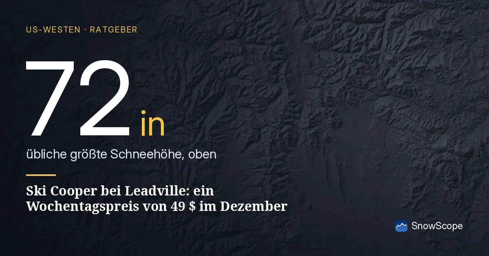

Ski Cooper bei Leadville: ein Wochentagspreis von 49 $ im Dezember
Ski Cooper ist genau der Ort, über den sich Budget-Skifahrer Tipps austauschen: ein hohes, einfaches Skigebiet bei Leadville, das seinen Erwachsenenpreis an Wochentagen für 2026-27 bei 49 $ gehalten hat. Der Dezemberschnee dort ist eher bescheiden als tief, dafür aber sehr hoch gelegen und sehr früh.
Die Live-Schneeprognose für Ski Cooper in der SnowScope-AppSchneehöhen, Pulverschnee-Alarme und 3D-Karte, gratis.
Höhe ist das Verkaufsargument
Coopers Lifte beginnen bei etwa 10.580 ft (3.226 m) und reichen auf unserer Karte bis etwa 11.740 ft (3.579 m), mit 5 Liften und rund 20 mi (32 km) Pisten. In einem typischen Winter unserer Aufzeichnung erreicht dauerhafter Schnee die Bergmitte bereits Anfang Oktober, so früh wie kaum sonst in Colorado.

Bescheidene Tiefe, gute Chancen
Der Schnee häuft sich dafür nicht schnell an. An einem typischen 1. Dezember liegen auf der Bergmitte, etwa 11.160 ft (3.402 m), 18 in (46 cm); am 15. Dezember 26 in (66 cm); am Weihnachtstag 31 in (79 cm). Oben ist es kaum tiefer, 27 in (69 cm) an einem typischen 15. Dezember.
Am 15. Dezember hatten 70 % der Winter 20 in (50 cm) oder mehr auf der Bergmitte, und 91 % mindestens 10 in (25 cm). Bis zum 25. Dezember steigt der Anteil über 20 in auf 80 %. Ein magerer Dezember lässt am 15. nur 11 in (29 cm) übrig: genug für das sanfte präparierte Gelände, für das Cooper bekannt ist.

Die Wochentags-Teilung
Für 2026-27 hält Ski Cooper die Preise des Vorjahres: Ein Tagesticket für Erwachsene (22-68 Jahre) kostet 49 $ von Montag bis Freitag außerhalb der Feiertage und 99 $ am Wochenende und an Feiertagen. Die ganze Budget-Strategie passt in einen Satz: an einem Wochentag bei Cooper fahren.
Cooper, Loveland oder Vail?
Loveland, das andere hochgelegene Gebiet im Front Range, verkauft online für 60 $ bis zum 13. Dezember und danach zum Schalterpreis von 159 $ ab dem 14. Dezember, mit 29 in (74 cm) auf der Bergmitte an einem typischen 15. Dezember und 67 % der Winter über 20 in. Ähnlicher Schnee, und Coopers Wochentagspreis bleibt den ganzen Monat niedriger.
Vail, das große Resort gleich nebenan, hatte laut unseren Zahlen 24 in (62 cm) auf der Bergmitte an einem typischen 15. Dezember; die Preise haben wir dort nicht verglichen. Zumindest Anfang Dezember hält Coopers Höhenlage es beim Schnee mit seinem berühmten Nachbarn gleichauf.
Damals und heute
Cooper hat sich besser gehalten als viele andere: Die typische Schneetiefe am 15. Dezember auf der Bergmitte betrug 26 in (66 cm) in den ersten 15 Wintern unserer Aufzeichnung und 24 in (60 cm) in den letzten 15, obwohl der Anteil über 20 in von 80 % auf 53 % fiel. Der letzte Winter hatte an diesem Datum 16 in (42 cm).
Tipps für Skifahrer
- Fahren Sie von Montag bis Freitag außerhalb der Feiertage für den 49-$-Preis.
- Leadville liegt auf etwa 10.000 ft: Übernachten Sie dort eine Nacht, bevor Sie intensiv Ski fahren.
- Tennessee Pass (US-24) kann vereist und windig sein: Ketten mitnehmen und Straßenzustand vorher prüfen.
- Kälte ist hier die Hauptgefahr der Frühsaison: Packen Sie wärmere Schichten ein, als Sie denken.
Quellen und Nachweise
- Ski Cooper, day pass 2026-27 (official) www.skicooper.com/cooper-day-pass/
- Loveland Ski Area, lift tickets 2026-27 (official) skiloveland.com/lift-tickets/
- OpenSkiMap (mapped lifts and runs) openskimap.org/
- avalanche.org, US avalanche centers and forecasts avalanche.org/
Zu diesen Zahlen
Schneewerte: SnowScope-Schneehistorie, 46 vergangene Winter (1980-81 bis 2025-26) auf den angegebenen Höhen (Tal, Mitte, Gipfel), eine höhenkorrigierte Rekonstruktion des früheren Schnees für eine Fläche (auf Basis von ERA5-Land; Snow_Hydro 1 km für Marokko), keine Meldungen des Skigebiets. Aktueller Schnee: die SnowScope-Schneekarte. Lifte, Pisten und Höhen: OpenSkiMap-Kartierung. Preise: die unten genannten offiziellen Seiten, gelesen am 13. November 2026; dynamische Preise ändern sich mit Datum und Nachfrage.
Offizielle Lawinenlageberichte: Colorado Avalanche Information Center
Diesen Bericht zitieren
Für Forschung, Lehre oder Presse: Zahlen und Grafiken sind unter CC BY 4.0 mit dieser Quellenangabe frei nutzbar.
SnowScope (2026), Ski Cooper bei Leadville: ein Wochentagspreis von 49 $ im Dezember, https://snowscope.app/blog/de/2026/11/ski-cooper-leadville-december-49-dollar-weekday.html, abgerufen am 2026-11-15
SnowScope (Atlas Labs). (2026, November 15). Ski Cooper bei Leadville: ein Wochentagspreis von 49 $ im Dezember. SnowScope snow reports. https://snowscope.app/blog/de/2026/11/ski-cooper-leadville-december-49-dollar-weekday.html
BibTeX
@misc{snowscope2026skicooperleadvilledecemb,
author = {{SnowScope (Atlas Labs)}},
title = {Ski Cooper bei Leadville: ein Wochentagspreis von 49 $ im Dezember},
year = {2026},
month = nov,
howpublished = {\url{https://snowscope.app/blog/de/2026/11/ski-cooper-leadville-december-49-dollar-weekday.html}},
note = {Published 2026-11-15 09:34 UTC; accessed 2026-11-15}
}· CC BY 4.0 · Methoden, Daten und Werkzeuge →
Ski Cooper: Schnee und Temperatur nach Höhe, dieser Winter vs letzter (Werkzeuge) →
Ski Cooper folgen
Gratis: eine Nachricht, wenn Neuschnee kommt, und jeden Morgen die Vorhersage.